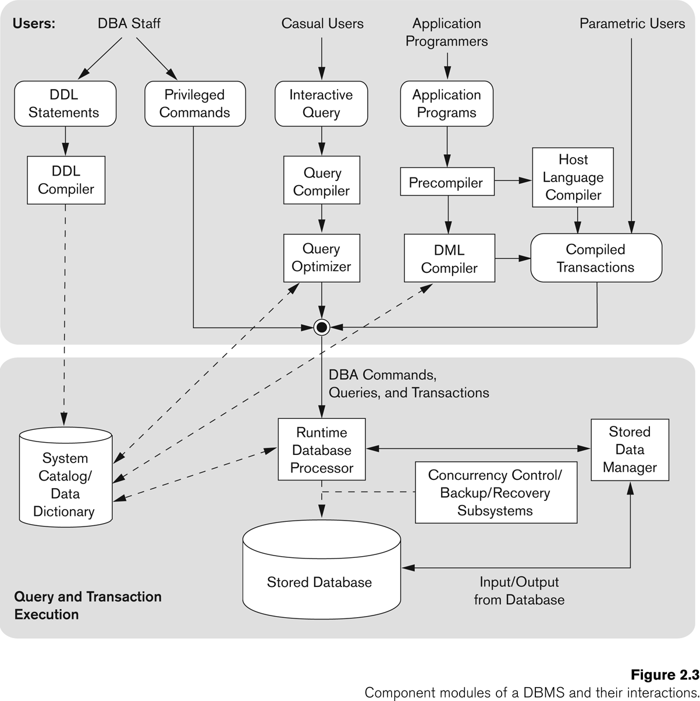

Index Rebuilding: Reorganize indexes for better performance
Table Reorganization: Optimize table storage
Space Management: Reclaim unused space
Defragmentation: Reduce data fragmentation
üîç Database Analysis Utilities
Schema Analysis: Analyze database structure
Data Profiling: Understand data quality and patterns
Dependency Analysis: Track object dependencies
Usage Statistics: Monitor database usage patterns
Utility Demonstration
Click the buttons above to see examples of different database utilities in action!
Key Benefits: Database utilities automate routine tasks, improve performance, ensure data safety, and simplify database administration!
DBMS Component Modules

Typical DBMS Component Modules
üéØ Overview
A DBMS is not just a query processor — it has many components working together. The diagram groups them by Users (who interact) and Query/Transaction Execution Modules (how DBMS processes).
üë• Users of DBMS
DBA Staff (Database Administrators)
Use DDL (Data Definition Language) statements → to define schema, create/alter tables, etc.
Use Privileged commands → to manage users, authorizations, and storage structures.
Casual Users
Write interactive queries (e.g., SQL queries directly in SQL*Plus, MySQL CLI).
Application Programmers
Write application programs that embed SQL queries in a host language (like Java, C, Python).
Parametric Users
Use predefined transactions repeatedly (e.g., bank tellers, ATM systems).
üèóÔ∏è DBMS Component Modules
1. DDL Compiler
Converts DDL statements (like CREATE TABLE) into internal definitions.
Stores them in the System Catalog / Data Dictionary (metadata repository).
2. System Catalog / Data Dictionary
Stores metadata about the database:
• Table definitions
• Index info
• Constraints
• User permissions
Essential for query processing.
3. Query Compiler
Takes a query (like SELECT * FROM Students WHERE Age>20;) and translates it into a low-level form (query plan).
4. Query Optimizer
Improves the execution strategy for queries.
Chooses best path: e.g., use index vs full table scan.
5. Precompiler
Used when SQL is embedded inside a programming language (like C, Java).
Extracts SQL commands and sends them to the DML compiler.
Leaves the rest of the program for the host language compiler.
6. DML Compiler
Translates DML statements (like SELECT, INSERT, UPDATE, DELETE) into low-level instructions for the runtime database processor.
7. Host Language Compiler
Compiles the application program (C, Java, etc.) with calls to the DBMS.
Produces compiled transactions.
8. Runtime Database Processor
Core module that executes DBA commands, queries, and transactions.
Interacts with:
• Stored Database (physical data on disk)
• Concurrency Control & Recovery Subsystems
9. Concurrency Control / Backup / Recovery Subsystems
Ensure correctness, consistency, and reliability of transactions:
• Concurrency Control → handles multiple users at once.
• Backup → periodic saving of database.
• Recovery → restores database after failure.
10. Stored Database
The actual physical data on disk.
11. Stored Data Manager
Manages the input/output operations between DBMS and physical storage.
Ensures efficiency of file access, buffering, indexing.
✅ Summary Flow
DDL Statements → DDL Compiler → Data Dictionary